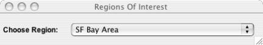

Fills in the latitudes and longitudes parameter automatically when user select a region of interest from the window as shown in Fig-1.
Though user can enter latitude and longitude range for a region by hand. But this control panel provides user the option of selecting a region of interest from given choices, which will automatically fill in latitude and longitude range, thus saving user from entering region range by hand.
|  |
| Fig - 1: Window that allows to select a region from the given choices. |